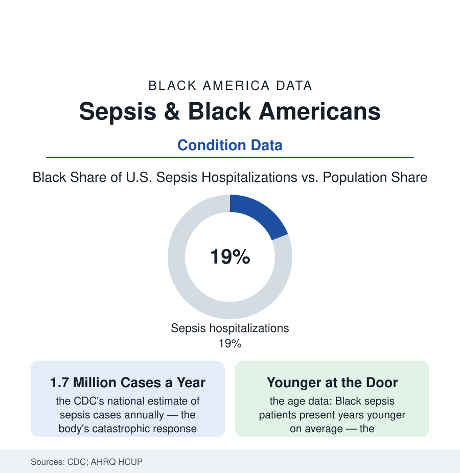

Black Public Health
Sepsis: The Emergency That Finds Black Patients Younger, Sicker, and Later
Black Americans develop sepsis at higher rates, at younger ages, and die of it more — a disparity the hospital data trace from the infection's first hour to the ICU door.

Sepsis is not a disease but a collapse: the body's response to infection turning on its own organs, killing more Americans than most cancers in the CDC's hospital data — 1.7 million cases a year in the national estimate, a death in a substantial share. Its distribution is this section's patterns at emergency speed: Black Americans are hospitalized for sepsis at rates well above their population share, arrive younger and with more organs already failing in the severity data, and die at higher rates — a chain the critical-care literature has traced hour by hour, from the first missed fever to the ICU. This article reads the emergency file.
Incidence: The Upstream Conditions Arrive Together
The incidence gap is the atlas's chronic files compounding: the infections that seed sepsis (pneumonia, urinary and kidney infections, skin and soft-tissue infections, the post-surgical and device infections of the hospital itself) drawing on the diabetes file's immune and circulation damage (the diabetic foot's infection highway in the amputation data's own upstream), the kidney file's dialysis catheters and immune suppression, the hypertension file's vascular wear, the insurance file's deferred primary care (the infection treated at day one in the office against day five in the emergency department — the sepsis literature's own framing of its first cause), and the exposure file (the nursing-home and congregate settings, the essential-workplace infections of the COVID era's demonstration). The age data carry the compounding's signature: Black sepsis patients presenting years younger on average in the HCUP analyses — the midlife emergency of a population whose chronic diseases start earlier — and the severity-at-arrival rows (the organ-failure counts, the lactate levels, the shock rates at presentation in the registry data) showing the later door: the same disease, further along, at the first measured hour. The maternal line runs through the file's grimmest table (sepsis among the leading causes of the maternal file's deaths — the post-delivery infection dismissed at the first call in the case literature's recurring account).
Recognition is the file's first intervention and its data are bleak: the public-awareness surveys find sepsis — a top killer — among the least recognized medical emergencies in the general population, its early symptoms (confusion, breathlessness, the feeling of an illness turning) reading as flu until the turn is past, the awareness campaigns of the sepsis foundations fighting for the recognition stroke and heart attack won decades ago in the public mind. For the households of this file — whose primary care is thinnest and whose threshold for the emergency department is priced highest — the unrecognized hour at home stacks on the unhurried hour at triage, and the mortality table records the sum.
The Hospital Hours: Where the Gap Is Timed
Sepsis care is a race the guidelines themselves clock — the Surviving Sepsis hour-1 bundle (cultures, lactate, antibiotics, fluids) — and the timing studies give the disparity a stopwatch: Black patients' longer waits to first antibiotics in several emergency-department analyses (the triage file again — the chest pain and the fever under-triaged on the same machinery), the hospital-sorting effect (the sepsis mortality map concentrating in the under-resourced hospitals of the safety-net file — the ICU beds, intensivist coverage, and rapid-response infrastructure distributed like every other resource in this section), and the transfer data (the sickest patients' movement between hospitals arriving later and less often from the thin-resourced door). The outcome rows follow the hours: mortality gaps in the adjusted analyses of the major registries — narrowed in some recent years' data, the argument being over the slope — and the survivorship file beneath the deaths (the post-sepsis syndrome of the follow-up literature: the cognitive and physical wreckage, the readmission rates among the highest of any diagnosis in the Medicare data, the rehabilitation and home-health access of the arthritis file's machinery deciding who climbs back). The COVID chapter wrote the file at scale (the viral sepsis of the pandemic's wards, the same map in the same hospitals) and left its research infrastructure behind — the sepsis registries and equity dashboards of the current improvement literature, the bundle-compliance data now published by race in the systems that chose to look.
Reading the Sepsis Data
A fifth of the cases from an eighth of the population, years younger at the door, sicker at the first measurement, slower to the antibiotic: sepsis is the health file's argument about time made literal — every upstream deferral in this section compounding into an emergency whose outcome is decided in hours. The bundle exists. The clock is published. The data measure, to the minute, whose clock starts late — and a disparity you can time is a disparity you can assign, audit, and close.
More in Black Public Health
Hypertension Among Black Adults: Prevalence, Control, and Consequences
About 55 percent of Black adults have hypertension — the highest rate of any U.S. group. Prevalence, onset, control, and the stroke, heart, and kidney consequences in the data.
Diabetes Among Black Adults: Prevalence and Complications
Nearly one in five Black adults has diabetes, diagnosed or undiagnosed — and its complications fall with particular weight. The CDC data on prevalence, control, and outcomes.
Black Life Expectancy: The Gap at Birth and Its Causes
Black life expectancy at birth is about 73 years, roughly five years below the national figure — the summary measure of every health gap in this section. The CDC data.
Source: Centers for Disease Control and Prevention sepsis surveillance; Agency for Healthcare Research and Quality HCUP; Surviving Sepsis Campaign and critical-care literature.